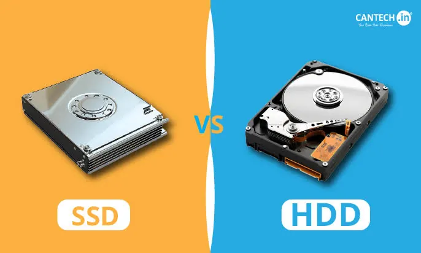
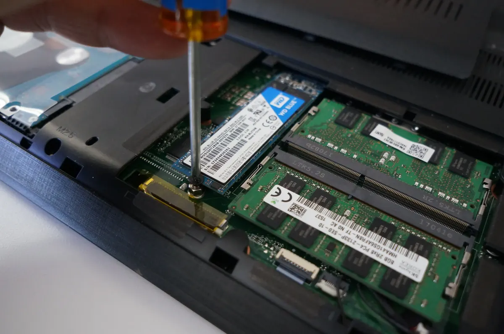

Laptops
SSD vs HDD: Which Storage Is Better for Your Next Laptop?
Compare SSD and HDD storage by speed, durability, capacity, price and everyday use to choose the right laptop configuration.
Introduction: Storage Affects More Than File Space
When looking to buy a laptop the storage will affect how much data you can store and also how quickly your laptop boots up, loads apps, and moves data. There are two main types of storage for traditional laptops, being Solid State Drives (SSD) and Hard Disk Drives (HDD).
The HDD uses spinning platters with magnetic data, and a floating head to read the data. The SSD uses flash memory and has no moving parts. New everyday laptops will mostly have SSDs for quicker performance, however the amount of storage you require and your budget will depend on the type of storage you go for. Understanding the differences will help you decide on the best configuration for your needs.

1. Speed
As there are no spinning platters or moving parts, SSDs will give you very quick access to your data. This will feel faster when booting up your laptop, opening apps and doing many tasks. If you are booting your laptop, opening a few apps or searching through lots of small files this will be very noticeable.
HDD’s can vary depending on their model and speed. They can be a good option if you just want to store a lot of data or are using an older system, however overall HDDs will feel slower to use as the primary storage. If your priority is having a quick device, go for an SSD for your OS and frequently used apps.
2. Durability
SSDs are generally more durable to everyday movement and vibrations due to them not having any spinning platters or moving head. This can be helpful if you are transporting your laptop between classes, offices and home. However they aren’t invincible and dropping, electrical issues, overheating, and controller problems can still cause data loss.
HDDs have moving parts and can suffer from physical damage. Be careful when handling your laptop, whatever type of storage you go for. Don’t rely on your storage as a backup, make sure to save important files somewhere else, either another drive or trustworthy backup service.
3. Storage Space and Price
Traditionally, HDDs have bigger storage space and are cheaper per gigabyte. If you require a large amount of storage, for example storing large amounts of photos, videos or backups then an HDD can be a good option. SSDs are now much cheaper however you can still find high capacity SSDs. It can be worth looking at the price of the laptop models and what storage they come with. Having a small SSD can feel fast however if you require large storage for video projects or games then you will fill up your storage quickly. Check if your laptop can accommodate an extra drive. Many slim laptops have non upgradable parts so make sure to check your service documentation.
4. Battery Life
SSDs will generally consume less power for many tasks due to no moving parts. This can help your laptop run efficiently, however will depend on your whole system. Your screen, CPU, GPU, network usage and battery size can heavily affect the battery life.
The motor in your HDD will use some power. However, with modern laptops your battery life won’t be affected as much as you would expect. The screen and CPU can consume a lot of power. Don’t go for a certain type of storage if you are looking for a long battery life. Look at independent battery tests and the full spec of the device.
5. Reliability
Both SSDs and HDDs can fail. HDDs can suffer from mechanical issues and SSDs can suffer from controller, firmware or flash issues. Depending on the issue you can experience various symptoms.
Some HDDs will make a clicking or grinding noise when failing. Don’t keep trying to restart your drive, instead stop using it and contact a professional. SSDs can fail suddenly with no noise. If you haven’t backed up your important files don’t try anything that could cause you to lose data. A specialist may be able to determine if your data can be recovered however there is no guarantee and can be costly.

6. SATA SSD, NVMe SSD, HDD
SSDs can vary in performance. SATA SSDs have a SATA connection which was originally for storage devices. They can be much quicker for many everyday tasks compared to older HDDs. NVMe SSDs use the PCI Express connection for communication which can have much quicker sequential and random performance depending on the drive.
Make sure your laptop will support the correct form factor and connection. If the drive is the right size it may not be electrically compatible. A good SATA SSD can feel fast for everyday browsing, Office and studying. NVMe can be useful for heavy tasks and transferring large files however will depend on what you are doing.
7. What is the Best Storage for Students?
If you are using your laptop for browsers, Office, video calls, coding and studying then an SSD will be a better option for your primary drive. This will give you a fast feeling laptop and is great for transporting. Choose how much storage you want based on what apps you are using, projects and offline files.
If you are on a tight budget a smaller SSD may be better for your OS and apps. As long as you can store your large files somewhere sensible this can be a good option. Using cloud storage can help however think about how reliable your internet is, how much you can store with subscriptions and the privacy. Make sure you have a backup of any important assignments and project files.
8. What is the Best Storage for Creators and Businesses?
Video editors, photographers and designers may require large storage for raw footage, images and project archives. Having a fast internal SSD can help when working on active projects. An external HDD can give you economical storage for backups or less frequently used files. Some professional uses can benefit from having multiple SSDs however it is important to make sure they are compatible and have a backup plan.
Businesses should consider performance, storage, encryption, management and replacement. A fast drive won’t protect you from accidentally deleting files, ransomware or theft. Make sure you have a documented backup plan.
9. Can I Upgrade My HDD to an SSD?
Many older laptops have an upgradable 2.5 inch HDD. This can be upgraded to a compatible SSD which can greatly increase your performance. Some have M.2 drives whilst others have soldered storage. Make sure to check your service manual and exact model specification.
Before upgrading make sure you have backed up your data. You may want to clone your old drive or do a clean install of your OS. Make sure the drive is the correct size, connection, capacity and any restrictions from the manufacturer. If you aren’t confident dismantling your laptop a qualified technician can upgrade it for you and check the system.
Conclusion
Overall, for most people buying a new laptop an SSD will be a better option for your primary OS drive. This will give you a faster and more durable device. An HDD can be beneficial if you require large storage at an economical price. Think about the storage you require, upgrade options, what you are doing and your budget. Don’t rely on your storage as a backup. The best storage option will be one that gives you a good balance of speed and storage.
Need a hand with your printer or laptop?
Printerworld sells printers, laptops and genuine supplies, and repairs and services both. Bring in your model number and we will help you get it right.